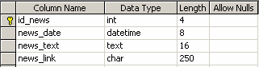
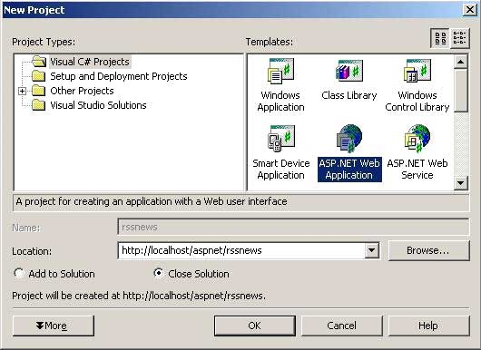
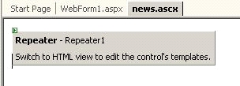
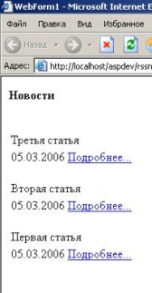

| |
| Off-line версия журнала "Sources.RU Magazine". Выпуск "Сентябрь 2006" | |
|
Программирование: · Создание игр на JavaScript · Делаем свой "pak-explorer" · Многомерная сортировка объектов · Новостная лента на ASP · Красивые ... (трилогия) · Программирование с использованием DirectX9 ПО: · Создание личного веб-сервера Графика/дизайн: · Реалистичные сигареты · Собственный IcoSet |
Новостная лента на ASP.NETАвтор: kosten_spbВ настоящее время очень распространена публикация новостей на различных web-сайтах. В этой статье будет рассказано о создании новостной ленты с поддержкой RSS средствами ASP.NET. Для хранения новостей мы будем использовать MSSQL Server 2000. Новости будут храниться в таблице, структура которой приведена ниже:  Где поле id_news – уникальный идентификатор новости, news_date – дата создание новости, news_text – основной текст новости, news_link – ссылка на подробное описание новости. Для создания этой таблицы можно использовать следующий SQL-запрос: CREATE TABLE [dbo].[News] ( [id_news] [int] IDENTITY (1, 1) NOT NULL , [news_date] [datetime] NOT NULL , [news_text] [text] NOT NULL , [news_link] [char] (250) NOT NULL ) ON [PRIMARY] TEXTIMAGE_ON [PRIMARY] GO ALTER TABLE [dbo].[News] WITH NOCHECK ADD CONSTRAINT [PK_News] PRIMARY KEY CLUSTERED ( [id_news] ) ON [PRIMARY] GO Для получения блока новостей будем использовать следующую хранимую процедуру: CREATE PROCEDURE GetNews AS BEGIN SELECT TOP 3 news_text, news_date, news_link FROM News ORDER BY news_date DESC END Структура таблицы может быть дополнена или изменена по усмотрению разработчика. Прежде чем приступить непосредственно к программированию, кратко познакомимся с технологией RSS. RSS (Really Simple Syndication) — дословно можно перевести как «очень простое синдицирование». Syndicate (англ.) – печатное агентство приобретающие информацию или непосредственно процесс приобретения информации. Другими словами, RSS – это формат обмена информацией в web. Изначально данный формат был разработан компанией Netscape для крупных новостных порталов. В последствии Netscape отказалась от поддержки своей версии формата RSS и передала его другой компании. В это время другая организация развивала свою версию RSS. В результате, в настоящее время известно семь форматов RSS разных версий. Возникает вопрос, какой формат RSS использовать в своих разработках? В данный момент, наиболее популярны версии 1.0 и 2.0, как стабильные. Остальные форматы отменены. Сравним форматы RSS 1.0 и 2.0.
В нашем примере мы будем работать с RSS 2.0. Рассмотрим структуру простого RSS документа (будем использовать только обязательные элементы): <?xml version='1.0' encoding='windows-1251' ?> <rss version='2.0'> <channel> <title>Простой RSS канал</title> <link>http://www.mypage.ru</link> <description>Новости с моего сайта<description> <item> <title>Первая новость</title> <link>http://www.mypage.ru/news/1</link> <description>Сайт начал работу.</description> </item> <item> <title>Открыт форум</title> <link>http://www.mypage.ru/news/2</link> <description>На сайте открыт форум.</description> </item> </channel> </rss> Корневым элементом в документе является rss с указанием номера версии в атрибуте version. В элемент rss вложен элемент channel, который имеет следующие обязательные элементы - title (название канала), link (URL web-сайта соответствующего каналу) и description (описание канала). Элемент channel может содержать любое количество элементов item. Эти элементы могут содержать в себе публикации целиком, или же анонсы со ссылками на полные варианты публикаций. Все вложенные элементы являются необязательными, однако хотя бы один элемент <title> или <description> должен присутствовать. В нашем примере мы используем следующие элементы – title (заголовок новости), link (ссылка на полный вариант публикации), description (анонс новости). Для разработки проекта будем использовать MS Visual Studio 2003. Создадим новый ASP.NET проект с именем rssnews:  Добавим в проект два элемента – еще одну aspx-страницу и web user control. Назовем их rss.aspx (генератор RSS документа) и news.ascx (пользовательский элемент управления для отображения новостей). Созданную по умолчанию страницу WebForm1.aspx переименуем в Default.aspx. Откроем элемент news.ascx в режиме Design и разместим на нем компонент Repeater:  В режиме HTML отредактируем файл news.ascx следующим образом: <asp:Repeater id="Repeater1" runat="server"> <HeaderTemplate> <h4>Новости</h4> <table> </HeaderTemplate> <ItemTemplate> <tr> <td colspan="2"><br> <%# DataBinder.Eval(Container.DataItem, "text") %> </td> </tr> <tr> <td><%# DataBinder.Eval(Container.DataItem, "date") %></td> <td><%# DataBinder.Eval(Container.DataItem, "link") %></td> </tr> </ItemTemplate> <FooterTemplate> </table> </FooterTemplate> </asp:Repeater> Тэги HeaderTemplate, ItemTemplate и FooterTemplate предназначены для описания заголовка, элемента и «башмака» таблицы. Перейдем в режим редактирования кода и отредактируем файл news.ascx.cs следующим образом:
namespace rssnews
{
/// <summary>
/// Summary description for news.
/// </summary>
public class news : UserControl
{
protected Repeater Repeater1;
private void Page_Load(object sender, EventArgs e)
{
// Put user code to initialize the page here
ArrayList alNews = new ArrayList();
SqlConnection sqlConn = new SqlConnection(ConfigurationSettings.AppSettings["connectionString"]);
SqlCommand sqlComd = sqlConn.CreateCommand();
sqlComd.CommandText = "GetNews";
sqlComd.CommandType = CommandType.StoredProcedure;
sqlConn.Open();
sqlComd.ExecuteNonQuery();
SqlDataAdapter sqlAdap = new SqlDataAdapter();
sqlAdap.SelectCommand = sqlComd;
DataSet ds = new DataSet();
sqlAdap.Fill(ds, "news");
DataTable dt = ds.Tables["news"];
foreach(DataRow dr in dt.Rows)
{
News n = new News();
n.date = dr["news_date"].ToString().Substring(0, 10);
n.text = dr["news_text"].ToString();
n.link = "<a href=" + dr["news_link"].ToString() + ">Подробнее...</a>";
alNews.Add(n);
}
Repeater1.DataSource = alNews;
Repeater1.DataBind();
}
#region Web Form Designer generated code
override protected void OnInit(EventArgs e)
{
//
// CODEGEN: This call is required by the ASP.NET Web Form Designer.
//
InitializeComponent();
base.OnInit(e);
}
/// <summary>
/// Required method for Designer support - do not modify
/// the contents of this method with the code editor.
/// </summary>
private void InitializeComponent()
{
this.Load += new EventHandler(this.Page_Load);
}
#endregion
}
public class News
{
private string Text;
private string Link;
private string Date;
public string text
{
get
{
return Text;
}
set
{
Text = value;
}
}
public string date
{
get
{
return Date;
}
set
{
Date = value;
}
}
public string link
{
get
{
return Link;
}
set
{
Link = value;
}
}
}
}
Механизм работы, приведенный в коде, следующий:
Для реализации такого механизма в классе News используются общедоступные свойства text, date, link. Страница с новостями готова, перейдем к реализации RSS в нашем проекте. <%@ Page language="c#" Codebehind="rss.aspx.cs" AutoEventWireup="false" Inherits="rssnews.rss" %> Перейдем в режим редактирования кода и отредактируем файл rss.aspx.cs следующим образом:
using System;
using System.Configuration;
using System.Data;
using System.Data.SqlClient;
using System.Web.UI;
namespace rssnews
{
/// <summary>
/// Summary description for rss.
/// </summary>
public class rss : Page
{
private void Page_Load(object sender, EventArgs e)
{
// Put user code to initialize the page here
SqlConnection scConn = new SqlConnection(ConfigurationSettings.AppSettings["connectionString"]);
SqlCommand scComd = scConn.CreateCommand();
scComd.CommandText = "select news_theme title, news_text description, news_link link from news item ORDER BY news_date DESC FOR XML AUTO,ELEMENTS";
scComd.CommandType = CommandType.Text;
scConn.Open();
scComd.ExecuteNonQuery();
SqlDataAdapter sda = new SqlDataAdapter();
sda.SelectCommand = scComd;
DataSet ds = new DataSet();
sda.Fill(ds, "xml");
DataTable dt = ds.Tables["xml"];
string strRss = "<?xml version='1.0' encoding='windows-1251'?><rss version='2.0'><channel>";
strRss += "<title>Новости сайта</title><link>http://site.ru/News.aspx </link><description>Наши последние новости</description><language>en-us</language>";
strRss += dt.Rows[0][0].ToString();
strRss += "</channel></rss>";
Response.ContentType = "text/xml";
Response.Write(strRss);
}
#region Web Form Designer generated code
override protected void OnInit(EventArgs e)
{
//
// CODEGEN: This call is required by the ASP.NET Web Form Designer.
//
InitializeComponent();
base.OnInit(e);
}
/// <summary>
/// Required method for Designer support - do not modify
/// the contents of this method with the code editor.
/// </summary>
private void InitializeComponent()
{
this.Load += new EventHandler(this.Page_Load);
}
#endregion
}
}
Разберем приведенный выше листинг. В первую очередь производится соединение с БД и выполнятся SQL – запрос. На запросе остановимся подробнее. Используемый в программе SQL-запрос имеет следующий вид: SELECT news_theme title, news_text description, news_link link FROM news item ORDER BY news_date DESC FOR XML AUTO, ELEMENTS В данном запросе из таблицы News выбираются поля news_theme, news_text, news_link, которым даются псевдонимы title, description link соответственно. Самой таблице News дается псевдоним item. Выборка сортируется по полю news_date. Окончательный результат представляется в XML формате: <item> <title>…</title> <link>…</link> <description>…</description> </item> <item> … </item>  Таким образом, мы получили часть RSS документа. Далее полученный XML ответ из БД дополняется до необходимого формата, соответствующего спецификации RSS. Для тестирования новостной ленты необходимо обратится к сайту, указав соответствующий адрес в адресной строке браузера (на моей машине он выглядит так - http://localhost/aspdev/rssnews/Default.aspx). Примерный результат представлен на рисунке. Что изменить вид новостной ленты, необходимо изменить содержимое тэгов HeaderTemplate, ItemTemplate и FooterTemplate компонента Repeater. Тестирование RSS производится при помощи любого RSS reader’а. В качестве адреса потока (feed) необходимо указать адрес страницы генерирующей RSS документ (в моем случае он выглядит так http://localhost/aspdev/rssnews/rss.aspx). Замечание: во всех приведенных примерах для получения строки соединения (connection string) с БД используется параметр connectionString записанный в файл web.config следующим образом: <add key="connectionString" value="workstation id=computerName;packet size=4096;user id=user;pwd=secret; data source=computerName;persist security info=False;initial catalog=DBName" /> Скачать исходник: rssnews.zip (13 кб) |
| Журнал "Исходники.RU". Copyright (c) 2004 by Исходники.RU. Designed by Mastilior. |